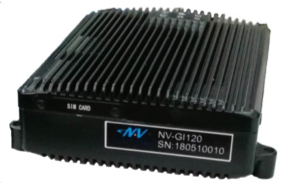

Navtech_NV-GI120安装指南#
NV-GI120 is a position and orientation system for automatic drive of NAV Technology. With the
high-precision GNSS board card and high-precision MEMS gyro, it has the real-time attitude
and position resolving ability while transmitting the original data of the sensor and board card
for post-processing high-precision resolution.
----Navtech official brochure

NV-GI120将GNSS接收器和MEMS IMU设备集成进一个小型的紧凑装置中，以提供高精度的定位结果。它支持双重天线配置和多频段频率的接收。
安装#

-
可以通过SMA连接方式将天线和该设备进行连接
-
一个数据线捆和该设备一起提供。该数据线捆可以分出多个连接器以处理通讯和配置工作
-
配置工作和对Novatel设备的操作相同。请联系设备供应商获取详细的配置指令
-
数据线上的标签和相对应的解释/翻译在下表中展示：
| Labels | Explanations |
|---|---|
| PPS | Pulse per second（每秒脉冲数） |
| 导航 | navigation output （replaceable by the ethernet) |
| 板卡 | ------- |
| 里程 | Odometer connection |
| 调试 | configuration |
| 网口 | ethernet |
| Two naked wire | Power （red and blue) |
| 扩展 | Extension |
免责声明#
This device is Apollo Hardware Development Platform Supported